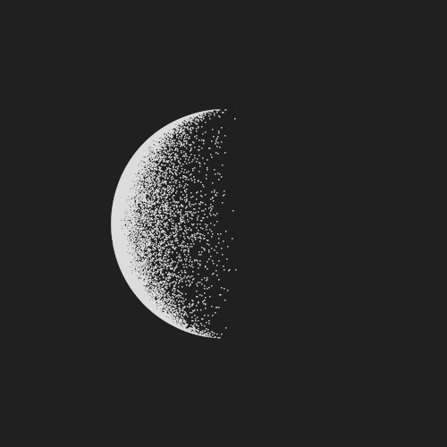

A Repository of Reference for Library and Information Professionals
💾Fostering a Global Community.💾
PORTAL
PHILOSOPHY
CLASSIFICATION TABLE
SEARCH
BLOG
COMMENTS
INFM 202
Informational "Arete"
-
-Apply to Information literacy
